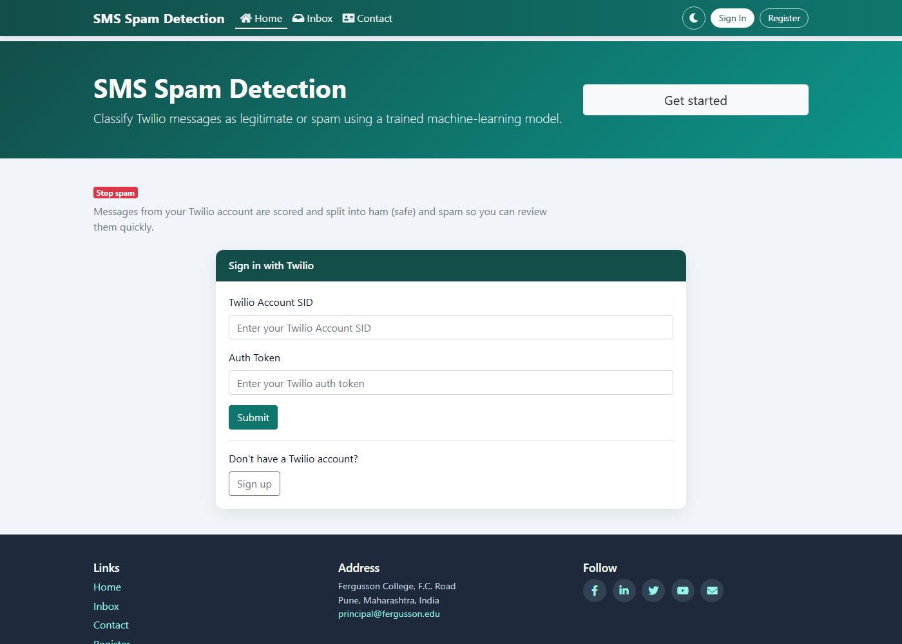
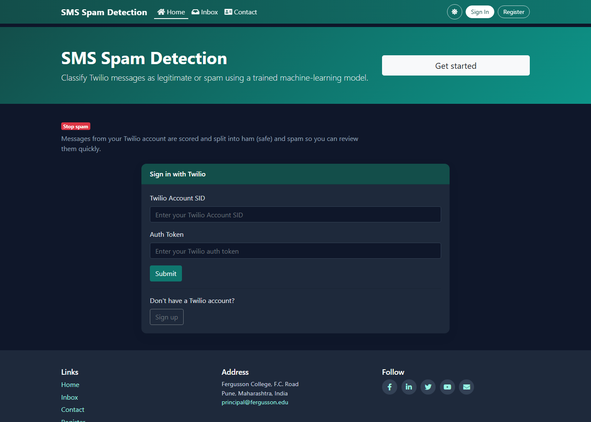
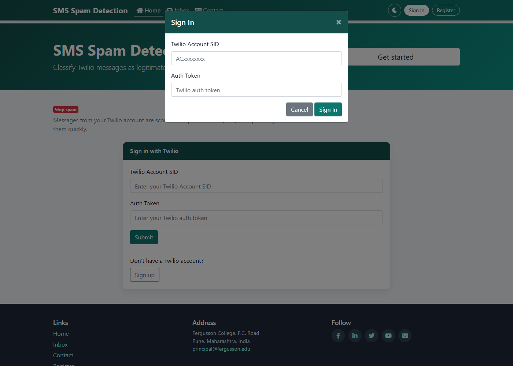
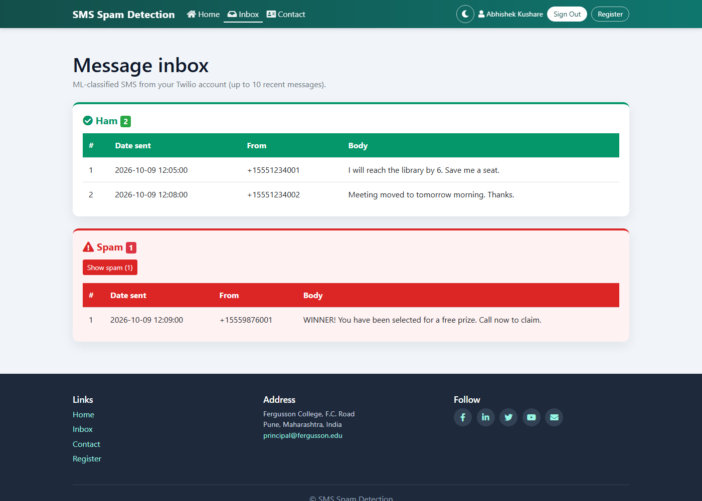
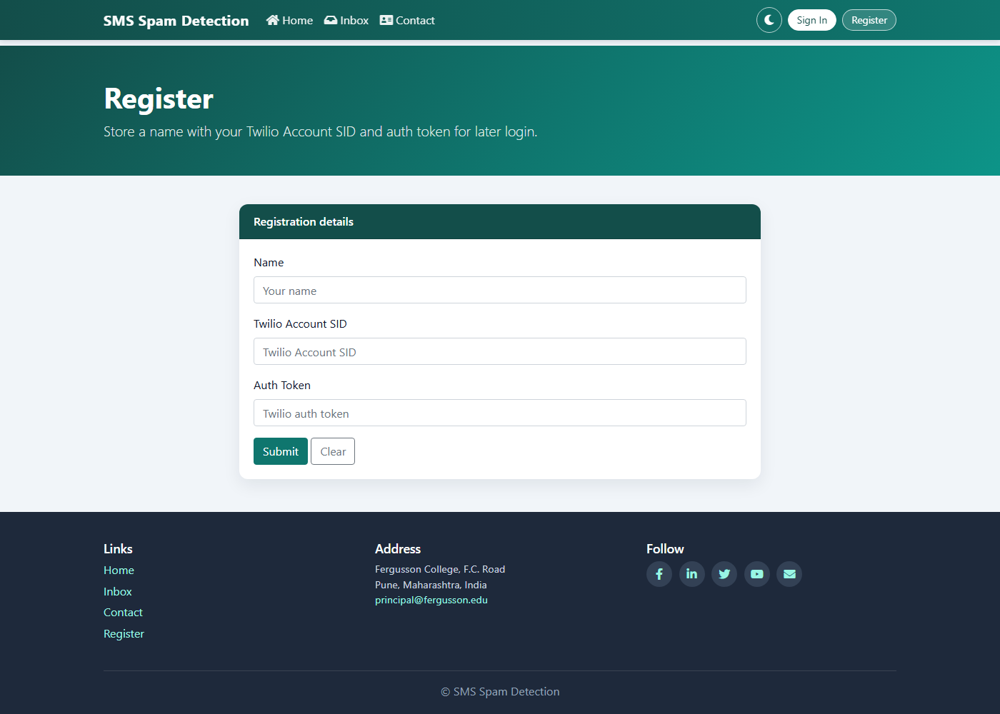

Project guide
A Flask, Twilio, MySQL, and TensorFlow prototype that separates legitimate SMS from spam.
| Page | Section |
|---|---|
| 3 | Introduction and features |
| 4 | Architecture |
| 5 | Technology and versions |
| 6 | How the application works |
| 7 | Screenshot — home, light theme |
| 8 | Screenshot — home, dark theme |
| 9 | Screenshot — Sign In |
| 10 | Screenshot — inbox |
| 11 | Screenshot — registration, and setup |
| 12 | Security, limits, and a short enhancement list |
docs/ARCHITECTURE.md — routes, session, database, UIdocs/MODEL.md — dataset, network, metricsdocs/SETUP_WINDOWS.md — Python 3.10, MySQL, runbookThe project classifies SMS from a Twilio account. Each message is labelled Ham (legitimate) or Spam. It is a teaching prototype: one Flask process, one saved neural network, and an optional MySQL table. It is not a production filter.
A student or developer who wants to see a web form, an external API, a database, and a classifier in one small system. Written by Abhishek Kushare.
Browser
│ http://127.0.0.1:8001
▼
Flask app.py
├── session who is signed in
├── Twilio client created after Sign In
├── MySQL optional users row
└── model.py
├── spam_model/
└── tokenizer.pkl
| Path | Role |
|---|---|
| GET / | Home and sign-in form |
| POST /login | Verify Twilio, open inbox |
| GET /logout | Clear session and Twilio client |
| GET /inbox | Classify up to 10 messages |
| GET, POST /register | Insert a users row |
| GET /contact | Feedback form, not stored |
More detail is in docs/ARCHITECTURE.md.
| Technology | Version | Use |
|---|---|---|
| Python | 3.10.11 | Runtime |
| Flask | 2.2.5 | Web application |
| TensorFlow / Keras | 2.10.1 | Train and predict |
| NumPy | 1.23.5 | Arrays |
| pandas | 1.5.3 | Read spam.csv |
| scikit-learn | 1.2.2 | Split and metrics |
| python-dotenv | 1.0.1 | Read .env |
| Twilio SDK | 9.11.2 | Fetch SMS |
| Flask-MySQLdb | 2.0.0 | MySQL access |
| mysqlclient | 2.3.0 | MySQL driver |
| MySQL Server | 8.x | Registration database |
| Bootstrap | 4.5.2 | Layout |
| Font Awesome | 5.15.4 | Icons |
| Notebook | 6.5.7 | Optional training UI |
The virtual environment used on this PC is C:\Users\kusharea\AppData\Local\Programs\spam310venv. A venv under the OneDrive project path can fail because Windows path length is limited.
process_sms() maps the text to 8 token ids.spam.csv has 5,572 messages (4,825 ham, 747 spam). An 80/20 split feeds a Keras network: embedding of size 24, flatten, dense layers 500 / 200 / 100, dropout 0.5, and a sigmoid output. Optimizer RMSprop, loss binary cross-entropy, early stopping patience 10. Notebook accuracy on the test split is about 0.982. Spam recall is about 0.89. Full notes are in docs/MODEL.md.
Database SMS_SPAM_DETECTION, table users: authid (SID), id, name, tno (Auth Token). Column order matters because sign-in reads the SID from the first column and the token from the fourth.

Figure 1. Home page. Theme control, Sign In, and Register sit on the right. Register is to the right of Sign In.

Figure 2. The same page after the header theme icon is used. The choice is stored in the browser.

Figure 3. Header Sign In opens this dialog. Placeholders only — no live credentials.

Figure 4. Signed-in header (name, Sign Out, Register) and the ham/spam split. Rows are sample messages for this figure.

Figure 5. Registration. This page needs MySQL. Sign-in does not.
Activate spam310venv pip install -r requirements.txt python train_export_model.py python app.py
Open http://127.0.0.1:8001. Create .env for MySQL only. Do not commit it. Step-by-step Windows notes are in docs/SETUP_WINDOWS.md.
.env, Account SIDs, or Auth Tokens.tno stores a token in plain text. Fine for a local demo only.Training text is the public SMS Spam Collection, saved here as spam.csv (5,572 messages). Application guide by Abhishek Kushare.